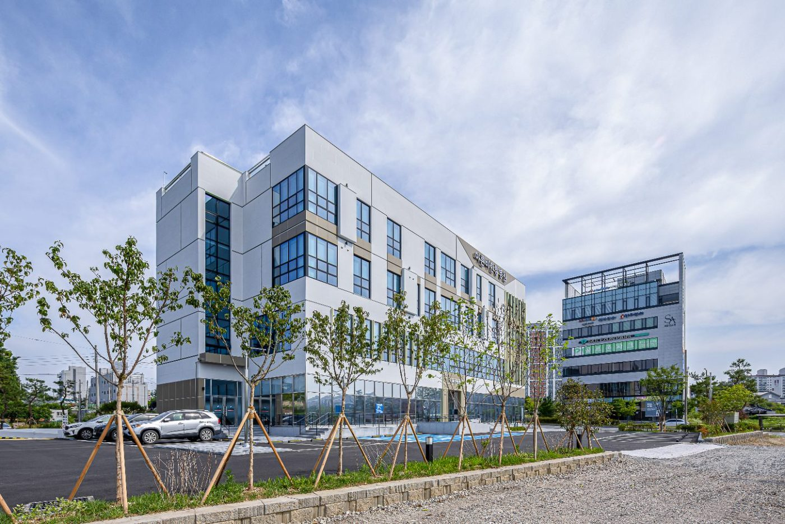
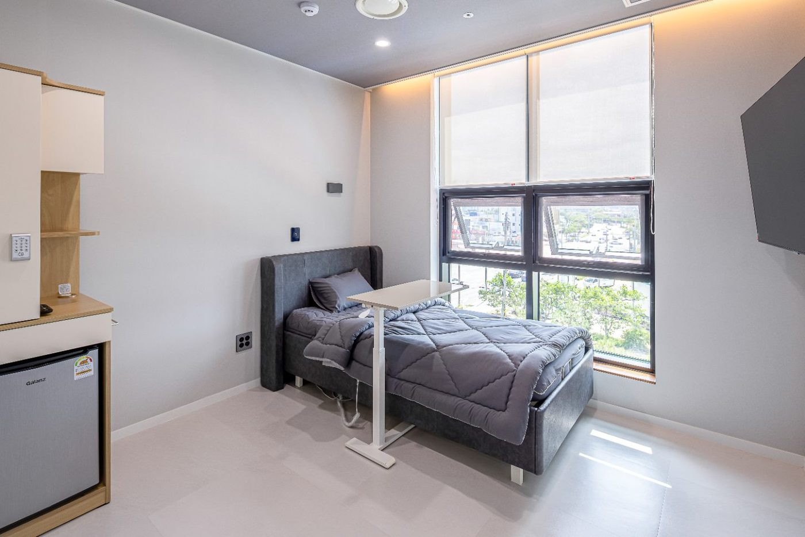
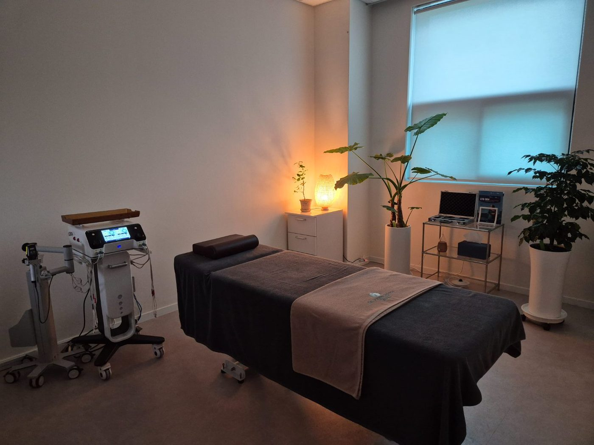
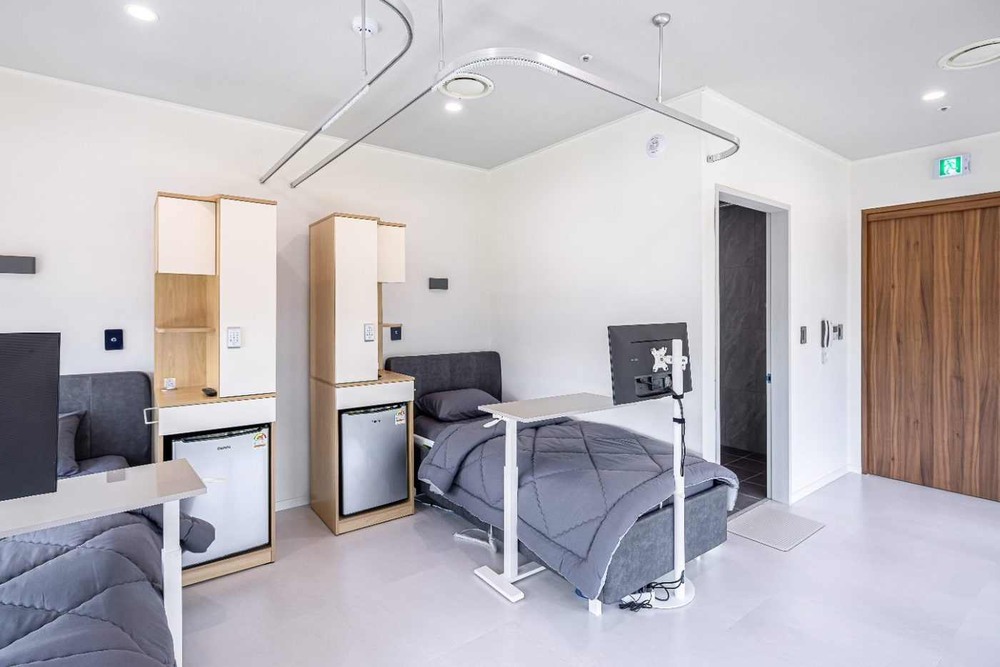
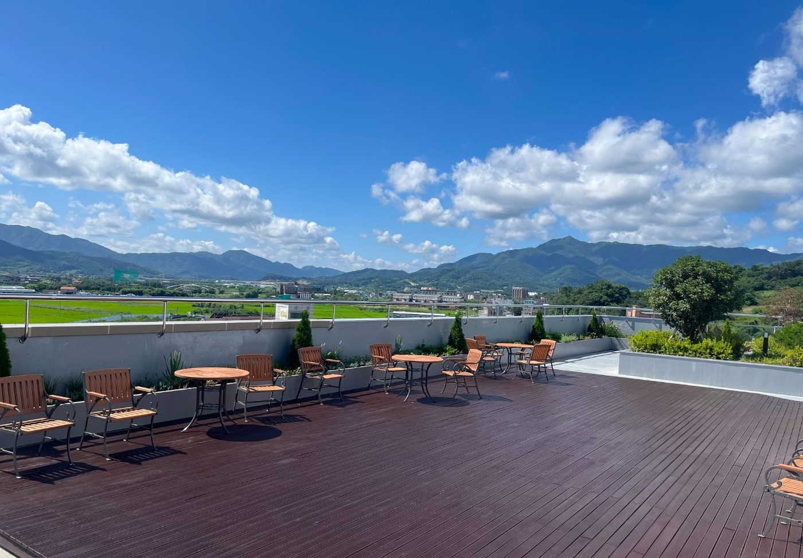
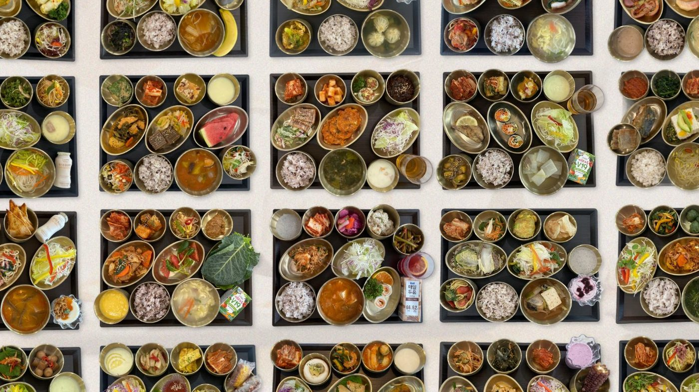

POINT 01
암 수술 전, 후 상담이 필요해요
수술 일정, 이동과 생활의 불편, 필요한 의료서비스를 확인한 뒤 진료·입원 상담 가능 여부를 알아봅니다.
관련 재활 안내 보기 ↗JEONJU · CANCER CARE INFORMATION
이른비한방병원은 전주시 완산구에 위치한 한방병원입니다. 전주 한방병원을 찾는 분들이 암 치료 전후 진료·입원 상담, 단기입원, 여성암 병동, 환자 식단 정보를 한곳에서 확인할 수 있도록 안내합니다.

의료기관 종별은 요양병원이 아닌 한방병원입니다. 진료 가능 여부와 입원 조건은 사전 상담을 통해 확인해 주세요.
01 / HOSPITAL GUIDE
‘전주 암요양병원’을 검색할 때는 병원 이름에 쓰인 표현보다 실제 의료기관 종별, 환자 상태에 맞는 진료 가능 여부, 입원 기간과 병동 운영 정보를 확인하는 것이 중요합니다.
이른비한방병원은 전주시 완산구 천잠로 45에 있는 한방병원입니다. 병원 공식 홈페이지에서는 암 수술 및 항암·방사선치료 전후 진료 안내, 1박 2일·2박 3일·1주일 등의 단기입원, 여성암 병동, 환자 식단을 소개하고 있습니다. 실제 진료·입원 가능 여부는 환자 상태와 병원 운영 상황에 따라 달라집니다.
정보 근거: 이른비한방병원 공식 단기입원 안내 ↗ · 의료진 소개 ↗수술 일정, 이동과 생활의 불편, 필요한 의료서비스를 확인한 뒤 진료·입원 상담 가능 여부를 알아봅니다.
관련 재활 안내 보기 ↗현재 치료 일정과 건강 상태를 바탕으로 입원이나 외래진료에 관한 상담 내용을 준비합니다.
관련 진료 정보 보기 ↗병원 위치, 의료진, 실제 진료 범위, 입원 형태, 운영시간과 비용 안내를 종합해 비교합니다.
의료진 소개 보기 ↗02 / SHORT-STAY ADMISSION
이른비한방병원 공식 안내에는 1박 2일, 2박 3일, 1주일 등의 단기입원 기간이 소개되어 있습니다. 다만 이 기간은 안내 예시이며, 실제 이용 가능 여부와 기간은 환자 상태·의료진 판단·병실 현황에 따라 달라질 수 있습니다.

단기입원 기간은 병원 상담을 통해 확인해 주세요.

여성암 병동
병실 환경
편의 공간03 / WOMEN’S WARD
이른비한방병원 공식 홈페이지에는 여성암 병동 운영 정보가 소개되어 있습니다. 유방암·부인암 등 암종이나 치료 단계에 따라 필요한 의료서비스가 다르므로, 실제 입원 조건은 병원과 상담해 확인해 주세요.
04 / MEALS & NUTRITION
이른비한방병원은 공식 홈페이지에 날짜별 환자 식단 기록을 공개하고 있습니다. 입원을 알아볼 때 제공되는 식사의 종류와 개별 식단 조정 가능 범위, 영양 상담 절차를 확인해 보세요.

식단 구성은 실제 운영 상황에 따라 달라질 수 있습니다.
05 / BEFORE CONTACTING
아래는 일반적인 상담 준비 항목입니다. 병원 실제 입원 심사 절차, 필요 서류, 비용 및 진료 가능 범위는 문의할 때 안내받으세요.
현재 수술·항암·방사선치료 일정, 치료받는 병원, 주된 문의사항을 정리합니다.
단기입원을 원하는지, 입원 시작일이 언제인지, 외래진료를 고려하는지 생각해 둡니다.
환자 상태에 따른 진료·입원 가능 여부, 병실 현황과 실제 이용 조건을 확인합니다.
예상 비용, 급여·비급여 구분, 필요한 진료기록과 서류는 상담 시 확인합니다.
의학적으로 긴급한 증상이 있거나 응급진료가 필요한 경우에는 일반 입원 상담보다 즉각적인 의료평가와 응급의료기관 이용이 우선입니다.
06 / FREQUENTLY ASKED QUESTIONS
질문에 대한 기본 정보를 먼저 확인하고, 개인별 입원 가능 여부는 병원 상담을 통해 확인하세요.
이른비한방병원의 정식 의료기관 종별은 한방병원입니다. '전주 암요양병원'이라는 검색어로 입원 시설을 알아보더라도 실제 의료기관의 종별과 제공하는 진료·입원 서비스를 구분해 확인하시기 바랍니다.
이른비한방병원은 전주시 완산구에 위치한 한방병원으로, 공식 홈페이지에서 암 치료 전후 진료 안내, 단기입원, 여성암 병동 및 환자 식단 등을 소개하고 있습니다. 전체 진료 범위와 의료진은 공식 의료진 소개에서 확인할 수 있습니다.
암 치료 일정과 환자 상태를 확인하는 입원 상담 정보를 안내하고 있습니다. 실제 입원 및 진료 가능 여부는 의료진 판단, 필요한 의료서비스와 병실 현황에 따라 달라질 수 있어 병원에 사전 문의해야 합니다.
병원 공식 단기입원 안내에 1박 2일, 2박 3일, 1주일 등이 소개되어 있습니다. 다만 실제 입원 가능 기간과 일정은 상담을 통해 확정해야 합니다.
공식 홈페이지에서 여성암 병동 운영을 안내하고 있습니다. 현재 이용 가능한 병실과 진료 대상, 이용 조건은 병원에 확인해 주세요.
공식 주간식단에서 날짜별 메뉴를 확인할 수 있습니다. 개인별 식단 조정 가능 여부는 병원과 상의해 주세요.
입원 기간과 제공되는 진료 등에 따라 비용과 서류가 달라질 수 있습니다. 공식 비급여 안내를 참고하되, 본인에게 적용되는 비용과 필요 서류는 병원에 확인하세요.
07 / VERIFIED CHANNELS
아래 링크는 이른비한방병원이 안내하는 정보와 운영 채널을 확인할 수 있는 경로입니다. 각 플랫폼에서 최신 게시물과 상세 내용을 확인해 보세요.
08 / LOCATION & CONTACT
진료와 입원 가능 여부, 병실 현황, 입원 비용 및 필요 서류는 방문 전 병원에 확인해 주세요.
표시된 진료시간과 연락처는 공식 홈페이지 공개정보 기준입니다. 입원 상담 가능시간과 실제 이용조건은 병원에 다시 확인해 주세요.
먼저 공식 병원정보를 확인한 뒤 전화 또는 네이버 지도를 이용해 방문을 계획해 주세요.
전화 상담하기 · 063-222-7512 ☎네이버 플레이스에서 길찾기 ↗공식 진료시간·오시는 길 ↗